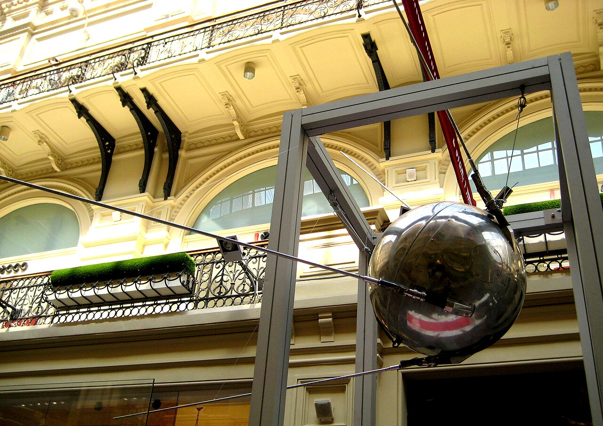

1957 — Sputnik 1, pierwszy sztuczny satelita Ziemi
4 października 1957 roku Związek Radziecki wyniósł na orbitę Sputnika 1, pierwszego sztucznego satelitę w historii. Przekazywany przez niego radiowy sygnał słyszeli radioamatorzy na całym świecie. Start zakończył się sukcesem dzięki rakiecie R-7, skonstruowanej w zespole Siergieja Korolowa, i rozpoczął wyścig kosmiczny między supermocarstwami.
